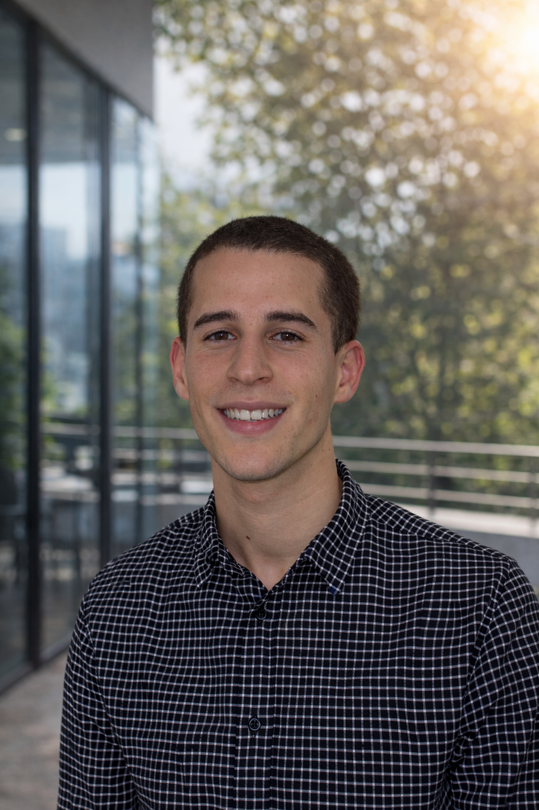

Valentin
Sautereau
Apprenti Ingénieur @ THALES Mérignac. Passionné par l'intégration drone, l'électronique de pointe et les systèmes critiques.

Présentation Personnelle
Futur ingénieur diplômé de l'ENSEIRB-MATMECA avec 5 ans d'expérience (Thales, Auckland Bioengineering Institute), je me spécialise dans la conception de démonstrateurs et l'intégration de systèmes embarqués complexes.
Mon parcours combine une solide expertise en électronique (conception PCB, routage KiCAD, asservissement), programmation (C/C++, Python, LabVIEW) et mécanique (modélisation Fusion 360, impression 3D). Alliant vision système et prototypage rapide, je m'investis pleinement dans la réussite de projets techniques ambitieux, de la conception matérielle à la validation opérationnelle.
Parcours Académique
Ingénieur Systèmes Électroniques Embarqués (SEE)
ENSEIRB-MATMECA | Bordeaux INP
Formation d'ingénieur spécialisée dans le hardware et le software embarqué.
DUT GEII (Génie Électrique et Informatique Industrielle)
IUT de Gradignan
Formation technique pluridisciplinaire en électronique et automatique.
Expérience Professionnelle
Ingénieur Intégrateur Systèmes Drone (Alternance)
THALES Mérignac | 2023 - 2026
- Conception d'un démonstrateur Hardware-in-the-Loop (HIL) pour validation optronique.
- Architecture hard/soft : intégration Teensy 4.1, asservissement PID et moteur pas-à-pas.
- Développement C/C++ : plugins simulateur VBS4 et routage télémétrie temps réel.
- Exploitation flux réseaux (MAVLink, UDP Multicast) pour essais systèmes (IVV).
Stage Recherche & Développement
Auckland Bioengineering Institute (Nouvelle-Zélande) | Été 2024
- Modification et intégration de cartes de contrôle de pompes.
- Conception et routage PCB sous KiCAD.
- Programmation LabVIEW sur FPGA (pilotage pompes piézoélectriques).
Technicien Électronique au FABLAB (Alternance)
THALES Mérignac | 2021 - 2023
- Maquettage et prototypage électronique rapide.
- Modélisation, conception et impression 3D.
- Programmation bas niveau.
Mes Projets
Banc HIL Drone & Optronique
Création d'un démonstrateur Hardware-in-the-Loop (simulateur tactique VBS4, support motorisé asservi et calcul fauchée via SDL2).
Traitement Radar (FFT)
Déploiement de calculs FFT sur AI Engines FPGA (AMD Versal) via MATLAB/Simulink.
Robotique XARM6
Développement ROS pour la détection et saisie de pièces avec bras 6 axes et Realsense.
Design Processeur VHDL
Architecture complète d'un processeur (ALU, registres, unité de contrôle).
Simulation Radio RF
Modélisation de chaînes GSM/QPSK sous ADS (amplification, filtrage).
Médiathèque C++
Gestion multi-utilisateurs avec polymorphisme et persistance des données.
Chat UNIX en C
Système client/serveur via tubes (pipes) et signaux UNIX.
Centres d'intérêt
On collabore ?
06 72 40 26 34